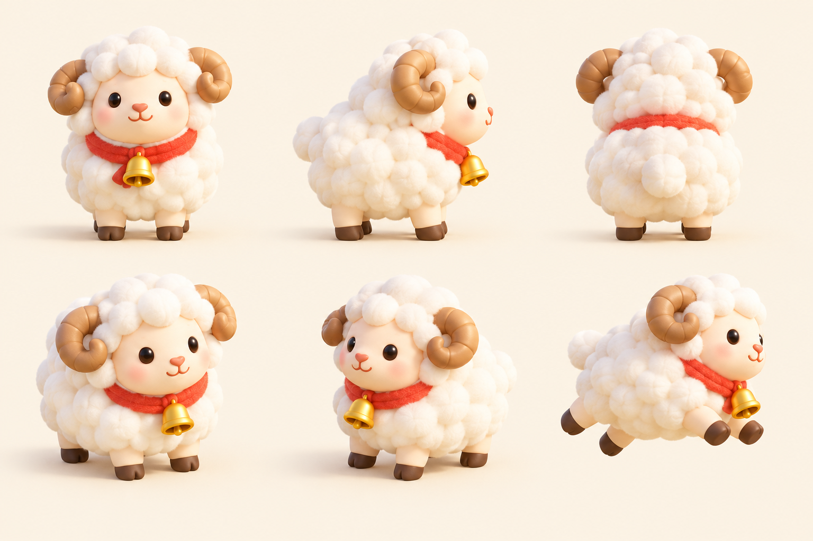
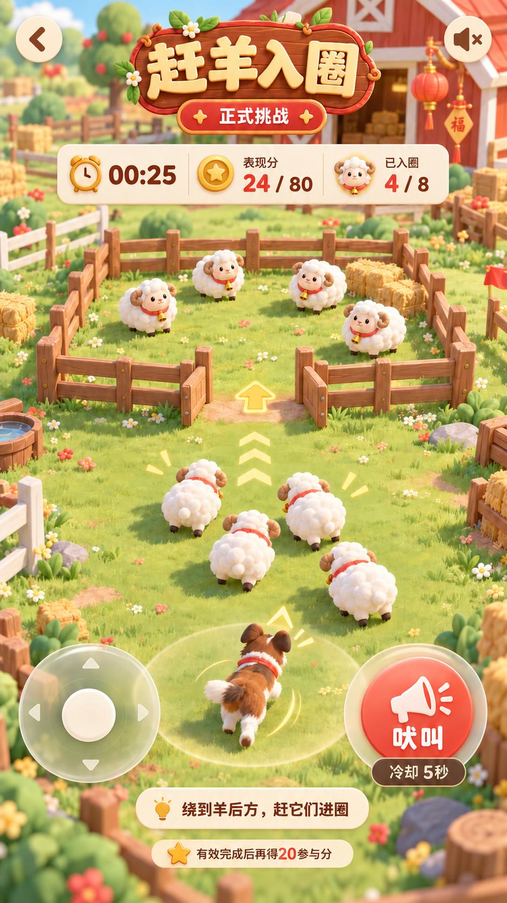
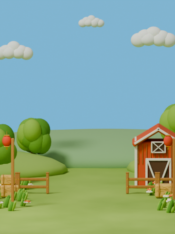
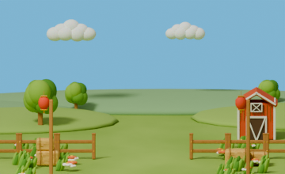
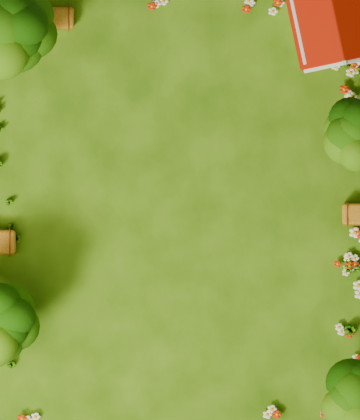

F05–F10 素材只读核查
当前素材诊断与 v4 制作方案；尚未制作修复资源。production_art_accepted=false。历史浏览器图是隔离 fixture，非新拍、非真机。
详细核查与阶段C方案 · 282帧测量 · Blender只读回执
角色板与现有母源四视图



赶羊：原型 / 现有390 / 现有320



当前背景v3（原逻辑画面尺寸）



下一步等待总控阶段C放行；先修现有v2母源出四视图与正式小样，签看后再导出完整图集。不覆盖v1/v2/v3。